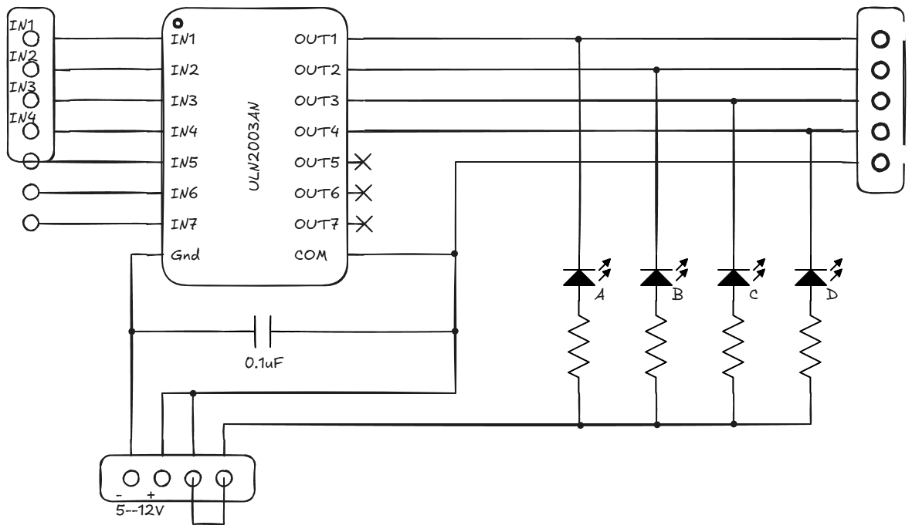

Working on EC module
My logbook cover pageNote: this entry was converted from my own Obsidian Markdown logbook notes to HTML using ChatGPT. All the contents were preserved - only formatting was adjusted.
I created a PlatformIO environment in Visual Studio Code for the ESP32-WROVER development board:
[env:esp-wrover-kit]
platform = espressif32
board = esp-wrover-kit
framework = arduinoThe initial stepper-motor code was adapted from the Random Nerd Tutorials ESP32 stepper-motor example .

The measured motor-coil resistance was:
\[ R_{\mathrm{coil}} = 35\,\Omega \]The approximate coil current can be calculated as:
\[ I_{\mathrm{coil}} = \frac{V_{\mathrm{SUP}} - V_{\mathrm{CE(sat)}}} {R_{\mathrm{coil}}} \]The stated \(V_{\mathrm{CE(sat)}}\) range is approximately \(0.9\,\mathrm{V}\) to \(1.6\,\mathrm{V}\). The datasheet also specifies a maximum single-channel output current of \(500\,\mathrm{mA}\).
Using \(V_{\mathrm{CE(sat)}} \approx 1\,\mathrm{V}\), the supply voltage corresponding to a \(500\,\mathrm{mA}\) coil current is:
\[ \begin{aligned} V_{\mathrm{SUP}} &= I_{\mathrm{coil}}R_{\mathrm{coil}} + V_{\mathrm{CE(sat)}} \\ V_{\mathrm{SUP,max}} &= 0.5(35) + 1 = 18.5\,\mathrm{V} \end{aligned} \]For a \(12\,\mathrm{V}\) supply:
\[ I_{\mathrm{coil}} = \frac{12 - 1}{35} = 0.314\,\mathrm{A} \]However, the ULN2003AN module is intended for a unipolar stepper motor with a common wire, such as the 28BYJ-48 5 V stepper motor[1]. It therefore cannot directly drive the available four-wire bipolar NEMA17 motor.
Project Molybdenum Penguin (Project MoP) provided a suitable alternative. I used the stepper-driver circuit from its power PCB, which is based on a DRV8251DDAR integrated circuit.
Initial motion of the elevator mechanism was poor due to excessive friction in the roller gantry system. The friction prevented the carriages from moving smoothly under gravity and also caused the rope to slip on the pulleys. To improve traction, I added a rubber band to the main pulley to increase friction between the pulley and the rope. Additional weight was also added to the carriages to increase rope tension. However, the increased load caused the stepper motor to skip steps, while removing the extra weight resulted in rope slipping again. After manually cycling both carriages up and down for approximately 10 minutes, enough wear occurred on the rollers to significantly reduce friction. As a result, only a small amount of additional weight was required, and the elevator platform began moving smoothly and reliably.
A 15-minute continuous-motion test was performed with the elevator repeatedly travelling up and down. During testing, the maximum stable motor speed was determined to be 30 RPM. The following operating parameters and measurements were observed:
During extended testing, the main pulley experienced a mechanical failure. The pulley had been manufactured from PLA, and the elevated temperature of the stepper motor likely softened the material enough to reduce its structural strength. Replacement pulley components are currently being printed using PETG, which should provide improved temperature resistance and durability.